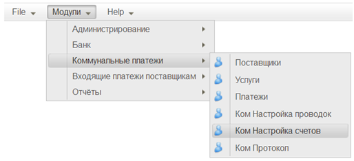
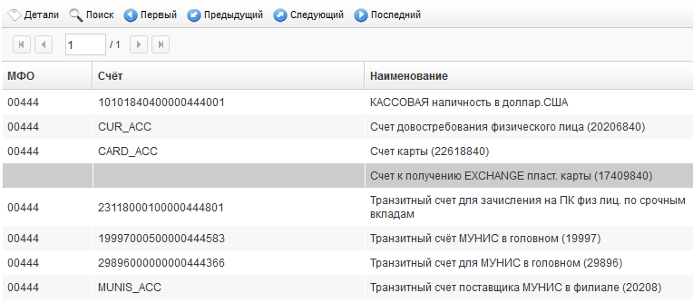
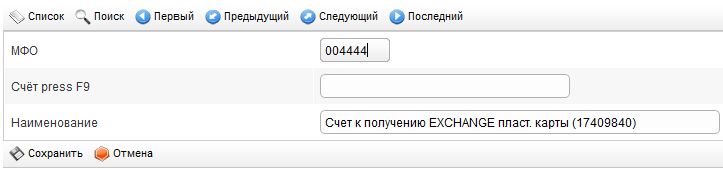
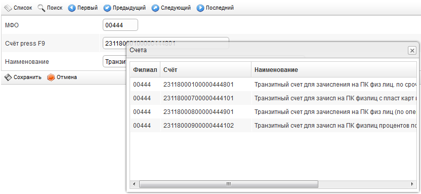
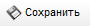
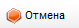

Настройка счетов |
Наверх Назад Вперёд |
|
Для осуществления платежей через систему «МУНИС» необходимо настроить счета, участвующие в проводках. Головное отделение Банка устанавливает шаблоны счетов, а в филиале для работы системе «МУНИС» необходимо в соответствии с шаблонами указать конкретные используемые 20-тизначные бухгалтерские счёта. Модуль настройки счетов доступен из пункта меню «Модули \ Коммунальные платежи \ Ком. Настройка счетов» (см. Рисунок 1).  Рисунок 1
Работа в модуле начинается со списка счетов (см. Рисунок 2).  Рисунок 2 Для настроенных счетов заполнены все три поля списка: «Bank kodi», «Hisob», «Nomi». Для тех счетов, которые ещё необходимо настроить в данном филиале, поля «Bank kodi» и «Hisob» пусты, заполнено только поле «Nomi», в котором указывается, какой тип счёта нужно установить для текущей записи. Для открытия карточки настройки счёта нужно выбрать в списке запись и нажать кнопку , расположенную в панели управления над списком. Карточка настройки счёта содержит следующие поля (см. Рисунок 3):  Рисунок 3
•МФО – код МФО Филиала. Поле заполняется с клавиатуры. Обязательно для заполнения. •Счёт – реальный счёт, требуемого типа, используемый в Филиале. Поле заполняется выбором из выпадающего списка. Список активируется нажатием клавиши « F9» (см. Рисунок 4). Обязательно для заполнения. •Наименование – наименование счёта. Поле заполняется автоматически при выборе счёта в поле «Hisob», но может быть изменено вручную с клавиатуры.
 Рисунок 4 Для сохранения настроек необходимо использовать кнопку  .Для отмены внесённых в карточку изменений необходимо использовать кнопку  . |